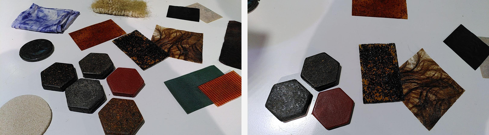
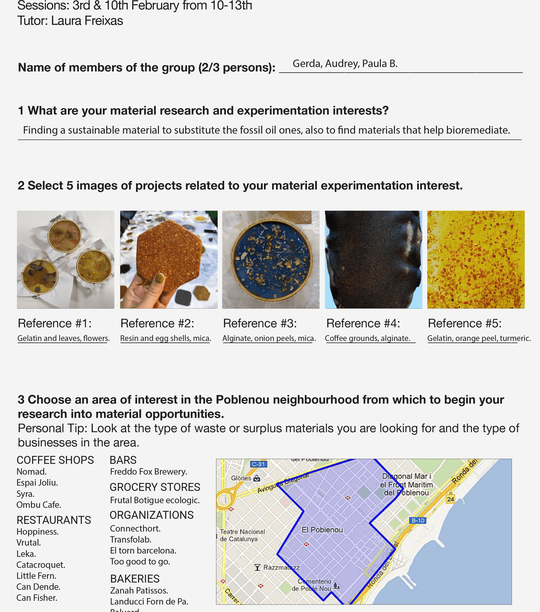
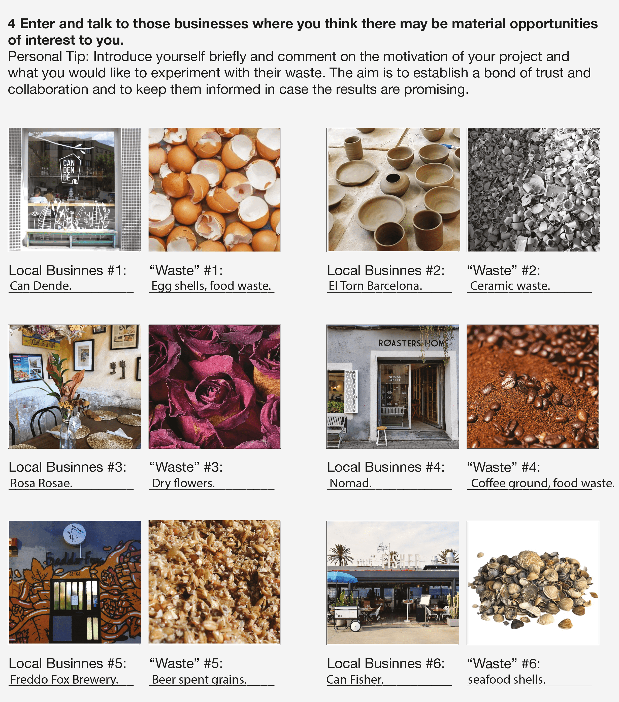
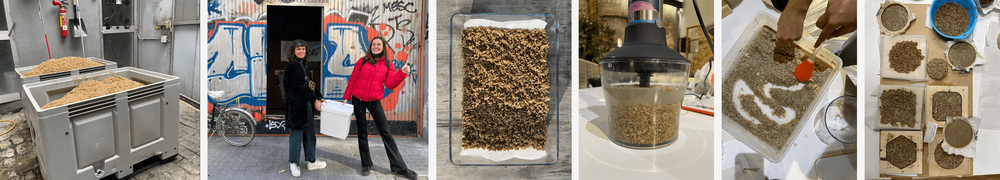

term 2
exploring emergent technologies
groupwork biomaterials
The first part of this course we were exploring different kind of materials and their functions. The first task was to chose a material and analyse it. Audrey, Paula and me analysed a tow material parts, which were out off avocado seed mixed with iron oxide and the other one out of hierba mate with pine resin. Both came from Latin America and could be manipulated while drilling and assembling. You have different options to fabricate: planters, roofs, walls, flours, furniture like tables, plates, jewellery and so on.
Audrey, Paula B. and me were creating the second class the four different materials. Material 1 is with Agargar, Material 2 is with Alginate and Material 3 is with resin and Wax. But first we needed to prepare the food waste. We should collect all our food waste, like peels, coffeeground or egg shells. Then we needed to dry everything till its completely dried out and then grind into very small pieces. For making biomaterials its important that everything is completely dry otherwise it could starts to get bacteria’s and mould. You have five different ingredients: Plasticizer (to make it flexible and make it less easy to break, Pigments to add colors, additives like food waste/flowers/leaves etc, biopolymer like gluten, agaragar or alginate and water. When doing biomaterials the steps are important. After preparing the additives, its important to weight them, prepare jares/fabric (with glass and plastic vessels it shrinks on the sides, with wood it sticks on the sides and shrinks vertically) etc, mix ingredients (it is important to measure everything precise and take notes), cook or mix it cool (depends on the recipe), add plasticiser and mix, then add the pigments and additives (if you add something liquid, substract it of the amount of water) and mix and pour it into the mold, let it dry a few days and then take it out.


Material 2: For the material 2 biomaterial we need to prepare two mixtures. One for the basic material and one for calcium chloride liquid. For the liquid we just miyed 250 ml of water with 15 gramm of calcium chloride. First we prepared our fabrics and additives. Then we start mixing, but not boiling this time everything was mixed in cold temperatures, 12,5 gram alginate with 500ml water. After the mixture gets homogeneous we added 30ml glycerin and the some blue mica pigments. After that we separated the mixture in half. For the first half we sprayed first some calcium liquid on the fabric (which was an very thin mosquito net), then distribute the mixture on the fabric and spread some egg, garlic and onion shells, but this time didn’t mixed it. And also dripped some gold mica powder as a pigment. Then we sprayed again the calcium liquid on the material and let it dry. For the second half we put the mixture in a large injection and extrude it into the calcium chloride liquid. The we took it out and it looks like spaghetti, which was amazing (you can see it in the middle picture on the top, and then put it into water for a second.
Materialbasic 1:For this biomaterial we needed 10 gram of agar-agar (quimics dalmau), 200 ml water, 2ml vinegar and 2ml glycerine. Our group prepared different food waste for the biomaterials, unfortunately they weren´t dry enough so we couldn’t use any to avoid the moulding. So we used the materials we got. For the first vessel we added curcuma and orange peels. The second one got egg-shells and the third one we mixed hierva mate with spirulina as a pigment. First we mixed agar-agar with water and start cooking it until its boiling. Then we lower the head and added vinegar and glycerin and stir it until it is a homogeneous liquid. Then we added ouf food-waste and pigments and then we filled it into the forms, which contains a wood ring which holds a hard textile. The textile needs to be very strong and not dense. We realised that to make biomaterials its easier to make it completely transparent while using galantine instead of agar-agar. When using agar-agar we recognized it got fast milky. Also from the material with the egg-shells we got the best result, it got fast hard and the right consistency and quality. The first material with the orange peels didn’t dry good.


Material 3: For this biomaterial we needed 45 gram of pine resin, 15ml alcohol (90%), 5 gram carnauba way and 40-60 gram of food waste. Our group used four different ingredients for the food waste. For the first we added crushed egg shells and onion skins. For the second one we added coffee grounds. The third one we mixed with hierva mate and the last one with orange and lemon peels. To all of them we also added pigments like mica and spirulina to give them stronger colours. First we put the pine resin and the alcohol into a pot and start warm it up, for that we put a lit on it to make it faster. When it was homogenious we added the wachs and the pigments and mixed it further. The final ingredient was food waste. When the pixtures were ready we needed to be fast and poured it into the molds. It was important to add backing paper on the ground first and then on the top to not make it stick to the wood molds. Then you pressed the lit of the mould a bid on the mass to make it flat. And then leave the lit away to make the material getting hard faster. We could see a difference between the different food waste types. The one with the egg shells got really hard and dried fast and the one with the coffee ground the opposite. It never got completely hard and is still sticky, because we added to much coffee ground. In general we could see that when adding more food waste which has already a hard and strong texture is better for this method. So in the end you can drill and mill the material into different shapes and the third material gets hard super fast compared to the first ones which take much longer.
personal experiment
Material try after class: After class Audrey, Paula and me were experimenting again with creating biomaterials. I wanted to create things out of gelatine because we haven´t used it in the first class and add some leaves and dry flowers to create nice panels, which you could use for decoration or make plates out of it. Basically it was the same material like “Material 1”, but instead of agar-agar we added gelatine. It was much more liquid then one with agar-agar and more transparent. Also we tried another experiment and did some materials out of resin and wax and added algaes to try to make it more flexible and use it maybe for shoe soles. But we figured out that because we added food waste like egg-shells the “Material 3” doesn’t get hard at all. Its very flexible and sticky.


materials in context
The next task was to think about materials which we could get around Poblenau and ask, which kind of waste they have, what they do with it and if its possible to get some. We checked different kind of stores, a coffee shop “Normad” for coffeegrounds, a ceramic workshop “el torn” for ceramic waste, a flowers shop “Rosa Rosae” for dried and dead flowers, a breakfast restaurant “Can dende” for things like egg-shells, orange peels or other food waste, a local seafood restaurant “Can fisher” for seafood shells and at least a brewery “Freddo Fox” to get beer spent grains. The best luck we had in the brewery. Normally they bring their waste to farmers to feed their animals, but its possible for us to get beer send grains. Every week the brew beer twice, so we could come to get some twice the week. Its important to get it fresh. Otherwise it is molding fast and starts smelling. So we thought about different approaches to use the beer spent grains. For example its possible to grow food on mushrooms and use to feed animals and make bread out of it. But also you can use as a part for biomaterials, but we need to try it out to understand which issues and possibilities it contains.
  More interesting materials More interesting materials 2personal
The next task was to think about materials which we could get around Poblenau and ask, which kind of waste they have, what they do with it and if its possible to get some. We checked different kind of stores, a coffee shop “Normad” for coffeegrounds, a ceramic workshop “el torn” for ceramic waste, a flowers shop “Rosa Rosae” for dried and dead flowers, a breakfast restaurant “Can dende” for things like egg-shells, orange peels or other food waste, a local seafood restaurant “Can fisher” for seafood shells and at least a brewery “Freddo Fox” to get beer spent grains. The best luck we had in the brewery. Normally they bring their waste to farmers to feed their animals, but its possible for us to get beer send grains. Every week the brew beer twice, so we could come to get some twice the week. Its important to get it fresh. Otherwise it is molding fast and starts smelling. So we thought about different approaches to use the beer spent grains. For example its possible to grow food on mushrooms and use to feed animals and make bread out of it. But also you can use as a part for biomaterials, but we need to try it out to understand which issues and possibilities it contains. In the other shops we weren´t lucky, the most of them have already a way to resuse their waste. And the flowers shop for example starts celling just artificial flowers, because since the pandemic they didn’t get any jobs.
beer spent grains experiment
Our next task was to focus on one special resource/waste to work with. First we separated and asked around Poblenou different stores who could give us their waste to work with, but we were just lucky with the brewery. I went to the brewery called “Freddo Fox”, where the brew their own beer and cell it next to it. The people there were really friendly and were open to collaborate. So our group (Angel, Audrey, Paula B and me) decided on using beer spent grains. Per two liter beer is coming around 500 grams of beer waste (beer spent grains), which is in total a lot all over the world. It could be a good resource to reuse. So we start researching and found out that besides it contains many relevant nutrients, it could be used for different kind of applications. It can be used for various of things like, so for the SWOT-analysis we got following opportunities: human and animal food, soap, packaging, paper, eco bricks, tableware, furniture, compost, cattle food or even to grow mushrooms on. For the SWOT-Strengths we got following aspects: Beer spent grains contains fiber, 8% fat, 30% protein, polyphenols, lysine, 4% minerals, 18% cellulose and 40% nitrogen free contents. When thinking about the SWOT-Weaknesses we realised its still hard to collect, show difficulties in the logistics because you need to use it immediately so its not starting to mold or you need to dry it, which is a long process, when doing it naturally. For the SWOT-Threats we also wrote that it might take more time than a non-bio material to make. In the following miro-board you can see the full SWOT and lifecycle of the beer spent grains.
We collected the waste from Evan, who works in the “Freddo Fox” brewery and who told us, the possibility to come more often and show us around. We got around 3 kg which we divided in half, to use one in a wet condition and one dry and reflect the difference. The wet one we used to make paper and also I used it to put it into my compost. For the paper making we grinded it with water and for some experiments we added a bit grinded paper as well and make a paste out of it and drop it into various mould’s and nets.
swot and materiallifecycle
ecodesign strategy wheel
text
material feedback
text
remixing materials
text
Term 2